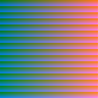
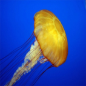
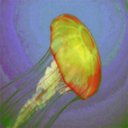
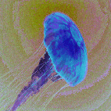

This project was inspired by allRGB.com and by my previous work with genetic algorithms.
There are 16,777,216 8 bit RGB colours. If you made an image that contained each colour exactly once it would be a 4096 by 4096 pixel square. This program takes an image of your choice and then tries to generate an image that uses only one of each colour that matches it. This is a huge feat as the image size is so large, finding the best match for the entire image would require millions of operations performed upon millions of pixels. Rather than taking a long time to find an exact answer, this program uses a genetic algorithm to work towards an acceptable solution in a much shorter period of time.
The general flow of the program is:
- User loads an image.
- The image is stretched to be exactly 4095x4095 pixels.
- An image that contains one of every colour is created.
- Two pixels in the allRGB image are chosen at random
- Work out how closely they match the reference image
- Work out how closely they would match the reference image if they were swapped around
- If the swap incurs an improvement, swap them
- Repeat steps 4-7 until the user is happy with the result.
Each time the program gets from step 4 to step 7 counts as a generation, each time the pixels are swapped counts as an improvement.
The simplicity of the algorithm means that many thousands of checks and swaps can be made every second. This, combined with the random coverage of the image, quickly leads to the visible improvement of the solution.
Try it yourself: FluidApp.jar
Source code (open source): Github
If you are having trouble running the program, please try this quick guide.
   {kind=link}
{kind=link}
{kind=link}
{kind=link}
- Resize the window until only the generation and number of improvements are visible to speed up the program.
- The images shown in the program often seem much worse quality than they are in reality, save the image and view in another program for a better look.